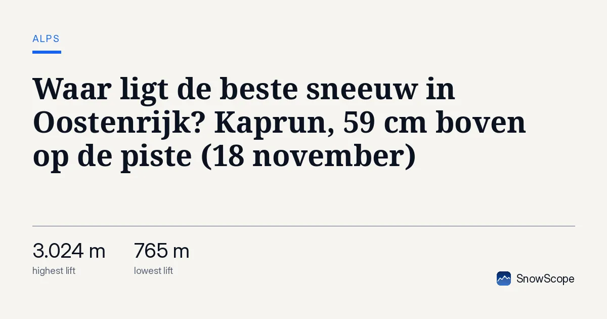
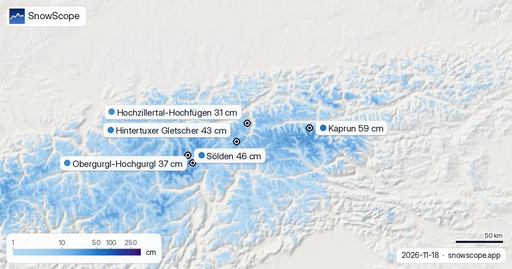

Waar ligt de beste sneeuw in Oostenrijk? Kaprun, 59 cm boven op de piste (18 november)
Kaprun heeft deze woensdag 59 cm boven op de piste, het meest in Oostenrijk.
Bekijk de sneeuwverwachting voor Kaprun in de SnowScope-appSneeuwhoogte, alerts en de 3D-kaart, gratis.
Sneeuwhoogte per skigebied
Over alle 12 skigebieden op deze lijst ligt de middelste waarde op 31 cm boven op de piste.
Daarna: Sölden (46 cm), Hintertuxer Gletscher (43 cm), Obergurgl-Hochgurgl (37 cm) en Hochzillertal-Hochfügen (31 cm).
| Skigebied | Sneeuwhoogte | Verse sneeuw, 72 u | Komende dagen | Top |
|---|---|---|---|---|
| Kaprun | 59 cm | 7 cm | 11 cm | 3.024 m |
| Sölden | 46 cm | 11 cm | 16 cm | 3.247 m |
| Hintertuxer Gletscher | 43 cm | 10 cm | 12 cm | 3.245 m |
| Obergurgl-Hochgurgl | 37 cm | 10 cm | 14 cm | 3.024 m |
| Hochzillertal-Hochfügen | 31 cm | 7 cm | 12 cm | 2.374 m |
| Kitzbühel | 31 cm | 6 cm | 11 cm | 1.993 m |

De top drie in detail
Kaprun heeft boven 59 cm; de liften gaan tot 3.024 m. Verse sneeuw: 7 cm in drie dagen, verwachting 11 cm tot en met 21 november.
Sölden heeft boven 46 cm; de liften gaan tot 3.247 m. Verse sneeuw: 11 cm in drie dagen, verwachting 16 cm tot en met 21 november.
Hintertuxer Gletscher heeft boven 43 cm; de liften gaan tot 3.245 m. Verse sneeuw: 10 cm in drie dagen, verwachting 12 cm tot en met 21 november.
Obergurgl-Hochgurgl heeft boven 37 cm; de liften gaan tot 3.024 m. Verse sneeuw: 10 cm in drie dagen, verwachting 14 cm tot en met 21 november.
Verse sneeuw, laatste 72 uur
De laatste drie dagen brachten Ischgl 14 cm, Serfaus Fiss Ladis 13 cm en Sölden 11 cm.
De komende drie dagen
Tot en met 21 november komt erbij: Ischgl 22 cm, Serfaus Fiss Ladis 19 cm en Sölden 16 cm.
Tip voor een korte trip
Meeste sneeuw voor je geld bij twee skidagen: Sölden, met nu 46 cm en tot en met 21 november nog 16 cm erbij.
Voor een weekend liggen de Duitse middelgebergten binnen een dagtrip met de auto; voor Oostenrijk plan je beter minstens drie nachten.
Naast de piste
Naast de piste is de sneeuw voorlopig oud en hard. Voor toerskiën geven de hogere hellingen met 59 cm de beste basis; check vooraf het lawinebulletin.
De sneeuw die je nu vindt komt vooral van de laatste storing, dus hoogte en noordhellingen tellen het meest.
Tips voor skiërs
- Begin van het seizoen: wax je ski's, de sneeuw is vaak stroef.
- Off-piste alleen na het lezen van het lawinebulletin.
About these numbers
Resort snow depths are the deepest snow on the resort's upper slopes from the SnowScope snow model (about 1 km, run of 18 november); they are estimates for an area, not a measurement at one point. Station values are measurements on the date shown. Forecasts can change. Always read the official avalanche bulletin before going off-piste.
Cite this report
For research, teaching or the press: the numbers and charts are free to reuse under CC BY 4.0 with this citation.
SnowScope (2026), Waar ligt de beste sneeuw in Oostenrijk? Kaprun, 59 cm boven op de piste (18 november), https://snowscope.app/blog/nl/2026/11/sneeuw-oostenrijk-skigebieden-18-november-2026.html, accessed 2026-11-18
SnowScope (Atlas Labs). (2026, November 18). Waar ligt de beste sneeuw in Oostenrijk? Kaprun, 59 cm boven op de piste (18 november). SnowScope snow reports. https://snowscope.app/blog/nl/2026/11/sneeuw-oostenrijk-skigebieden-18-november-2026.html
BibTeX
@misc{snowscope2026sneeuwoostenrijkskigebie,
author = {{SnowScope (Atlas Labs)}},
title = {Waar ligt de beste sneeuw in Oostenrijk? Kaprun, 59 cm boven op de piste (18 november)},
year = {2026},
month = nov,
howpublished = {\url{https://snowscope.app/blog/nl/2026/11/sneeuw-oostenrijk-skigebieden-18-november-2026.html}},
note = {Published 2026-11-18 11:39 UTC; accessed 2026-11-18}
}· CC BY 4.0 · Methods, data and tools →
Kaprun: snow and temperature by height, this winter vs last (tools) →
Follow Kaprun
Gratis: een bericht als er verse sneeuw komt, en elke ochtend de verwachting.